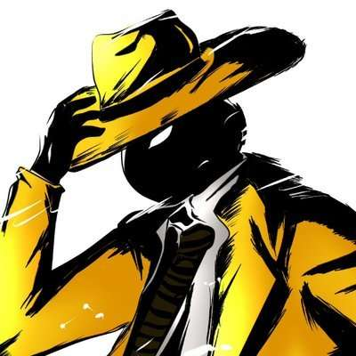

8-Colors Star Guardians +
8-Colors Star Guardians +

Italian solo developer and founder of Der Mondhase.
Andrea Demetrio is an Italian solo developer with a PhD in Physics (don’t ask). Mostly known for his 3D fighting game Schwarzerblitz and defined as a «trolling creator» by some players due to his approach to game development, he routinely explores different genres depending on how inspiration strikes him. He started his (so far) one man studio «Der Mondhase» in 2021. 8-Colors Star Guardians + is his first commercial game and the first to be published on console.